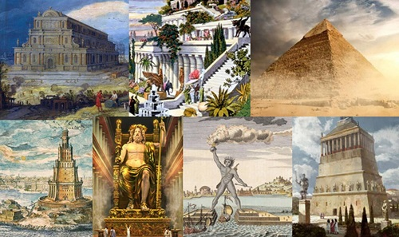
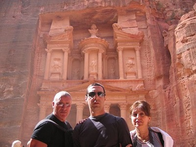

Antiguas Maravillas
Las siete maravillas del mundo conocido por los griegos helenísticos fueron seleccionadas por el pintor neerlandés Maerten van Heemskrerck en el siglo XVI en una serie de siete cuadros, que muestran las obras arquitectónicas y escultóricas que marcaron un antes y un después en la historia. Previamente autores como Filón de Bizancio, Antípatro de Sidón, Gregorio Nacianceno o Beda el Venerable, entre otros, habían confeccionado sus respectivos listados. Sólo una de ellas se mantiene actualmente en pie.
Mientras la existencia de otras es todavía un misterio para investigadores y expertos en la materia. La pregunta más frecuente es: ¿por qué escogieron solo siete puntos de referencia? La cultura helenística consideraba tal cifra como el número perfecto.


Sistema de Votación
La votación fue pública, los participantes debieron registrar un correo electrónico en el sitio web de la corporación y elegir sus candidatos favoritos. También se pudo votar vía SMS y a través de un número telefónico de pago. Una de las críticas del sistema empleado fue en la práctica nada impedía que una misma persona votara más de una vez, siempre y cuando lo hiciera desde un correo electrónico o SMS distinto. Se pudo votar por una sola candidata y recibir un certificado de la votación específica mediante el pago de dos dólares estadounidenses.
En cada voto se eligieron siete candidatas de una larga lista inicial, confeccionada por la corporación, y que se incrementó a pedido de diversos países o de solicitudes masivas de votantes. En los últimos meses de la votación solo participaron los 21 candidatos que hasta entonces habían obtenido la mayor cantidad de votos.
Ante las protestas del gobierno egipcio en la etapa final, se eliminó de la lista a las Pirámides de Guiza, hecho que fue disimulado por los organizadores asignándole a esta el estatus de Candidata Honoraria, debido a que es la única de las Siete Maravillas del Mundo Antiguo que permanece en pie.
En esta selección se admitieron estructuras creadas por el hombre hasta el año 2000, con la condición de que estuviesen en pie en la actualidad. Los resultados fueron dados a conocer el 07/07/07, es decir, el 7 de julio de 2007 en el Estádio da Luz, en Lisboa (Portugal), en una gran ceremonia.
Maravilla de Honor
Se consideró que la Gran Pirámide de Guiza (Egipto) sería la octava maravilla honorífica. La Gran Pirámide había sido excluida de la votación, por ser la más antigua y la única que aún perdura de las siete maravillas del mundo antiguo.
El hecho se dio en el marco de una gran oposición de las autoridades culturales egipcias, tales como Zahi Hawass, secretario general del Consejo Superior de Antigüedades del gobierno egipcio (Ministro de Antigüedades hasta 2011), que calificó a este concurso de «operación publicitaria».